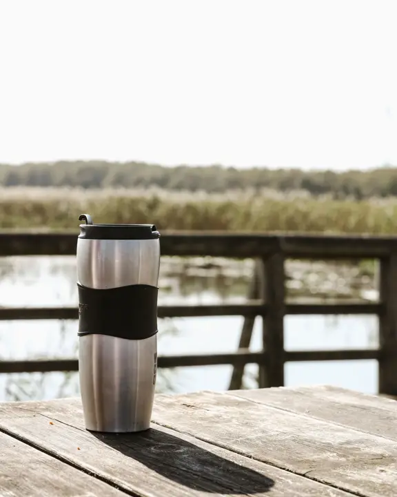

Campervan & Van Life Gifts UK: Kit for Road Trips
Ad: As an Amazon Associate I earn from qualifying purchases. Links on this page are affiliate links, so I may earn a commission if you buy, at no extra cost to you. More info.
For campervan and motorhome owners, weekend van-lifers and anyone planning a UK road trip in 2027.
1. Jackery Explorer 1000 v2 portable power station
A portable power station runs lights, laptops and small appliances off-grid. A big-ticket gift for serious van-lifers, or a joint family present.
View on Amazon UK2. BougeRV 40L 12V compressor fridge
A 12V compressor fridge keeps food properly cold, not just ‘cool’. Ideal for longer trips and festival season.
View on Amazon UK3. XPOtool 3.5t levelling ramps
Levelling ramps stop you sleeping on a slope when the pitch isn’t flat. An essential bit of kit that every campervan owner needs.
View on Amazon UK4. SUNNYNEST levelling ramps
Another popular set of levelling ramps. Compare them and pick the one that suits the van’s weight.
View on Amazon UK5. Roadster 12V travel kettle
A 12V kettle means a brew without hookup. Very British and very useful.
View on Amazon UK
Lifestyle photo (not the product): Pexels
6. YETI Rambler 10oz tumbler
A YETI tumbler survives being knocked around in a van and keeps tea hot for ages. Great for early mornings at the campsite.
View on Amazon UK
Lifestyle photo (not the product): Pexels
7. Battery copper fairy lights
Battery fairy lights instantly make a van interior feel cosy at night. A cheap, lovely add-on gift.
View on Amazon UK8. Bedsure sherpa fleece throw
A thick sherpa throw for chilly evenings with the side door open. A cosy gift that earns its space in the van.
View on Amazon UK